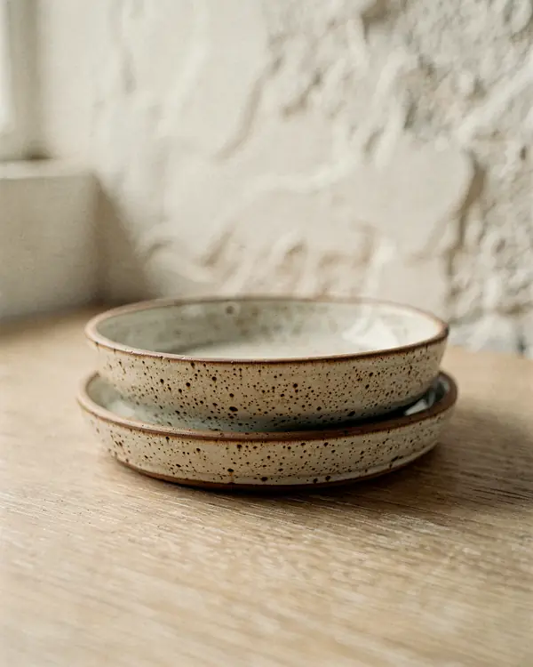
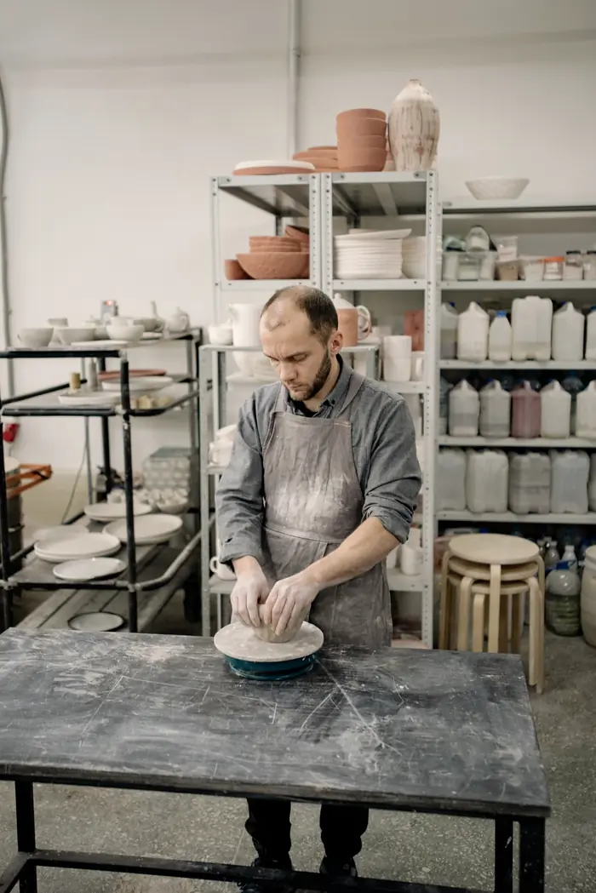
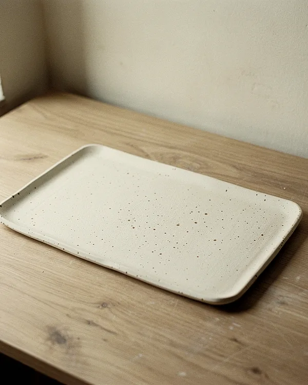
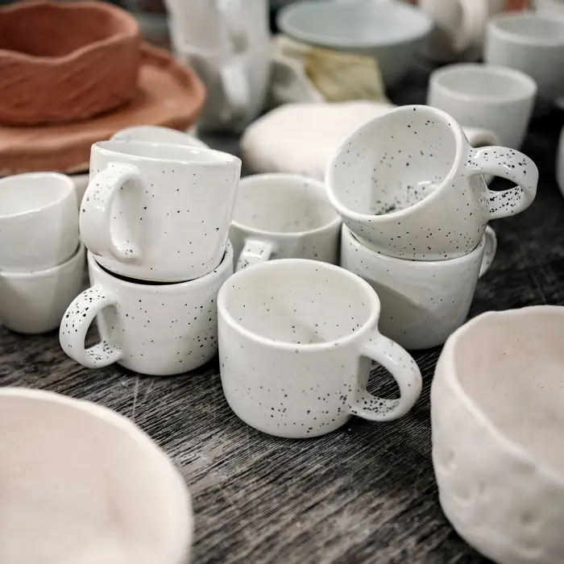
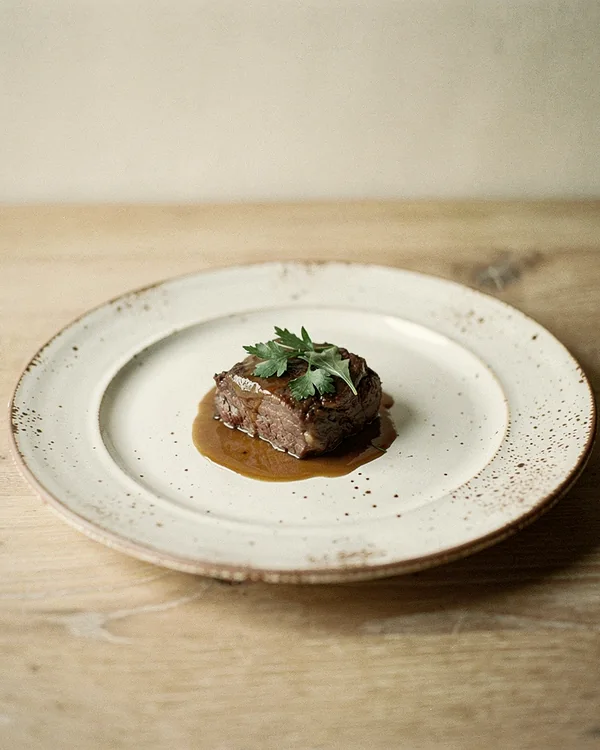
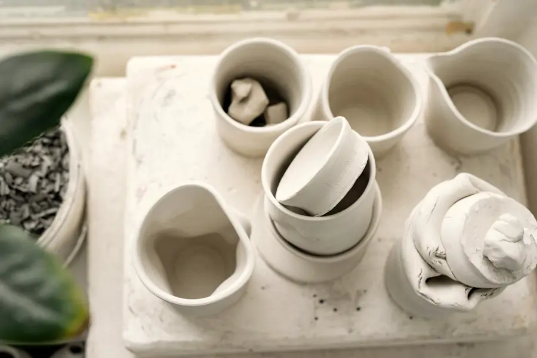

Une année de grès, en un tour.
Vingt-quatre pièces et gestes d'un atelier de poterie, posés sur une sphère. Elle tourne seule ; attrapez-la pour la faire pivoter. Démo : photos de l'exemple céramiste du plugin.
Au clavier : sélectionnez la sphère puis utilisez les flèches.















